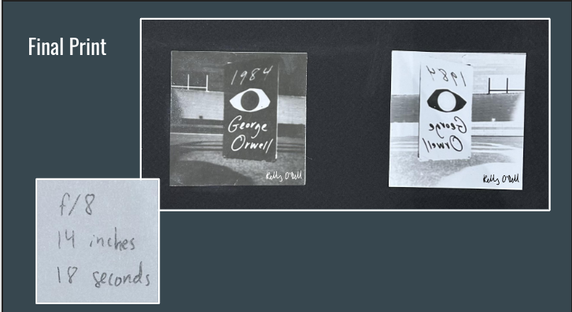
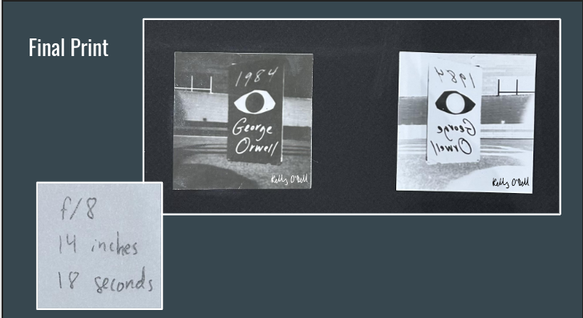
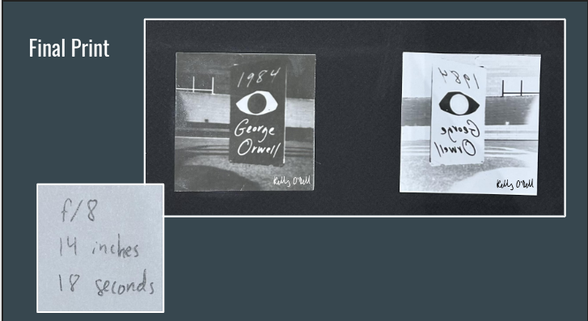

Pinhole
 

For my sophomore year of high school, I took a photography 1 class. This class mainly delt with darkroom photography, but also had a few digital assignments thrown in. Below are the links to the slides of every assignment I completed in this class.
